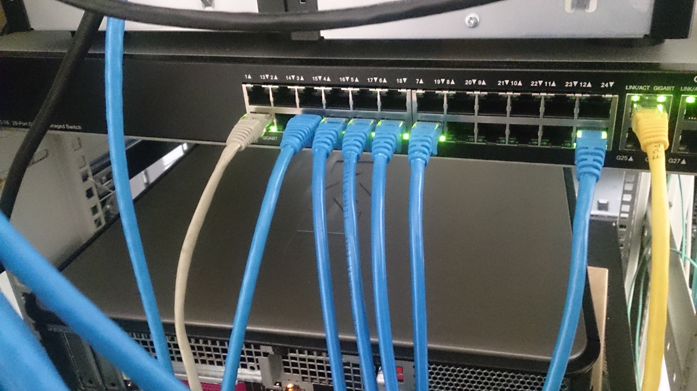

Lecture 3: Internet and Working with Web Development
CS-44105-001 - Web Programming I - Fall 2026

Lecture 3 explained how the Internet forms the foundation that web development is built on. The Internet is a massive, decentralized network of interconnected computers and devices that can communicate with one another by passing data across shared physical and wireless infrastructure.
We discussed how this infrastructure directly shapes web development work: every website a developer builds is ultimately hosted on a server connected to this network, and every visitor reaches that site by having their device request data across the same network. Understanding this layer helps explain why concepts like latency, hosting, and connectivity matter to developers, not just network engineers.
The lecture also introduced the basic client-server model that underlies almost all web development: a client (typically a web browser) sends a request over the Internet, and a server responds with the requested content. This model will be explored in more depth in the following lectures on protocols and URLs.